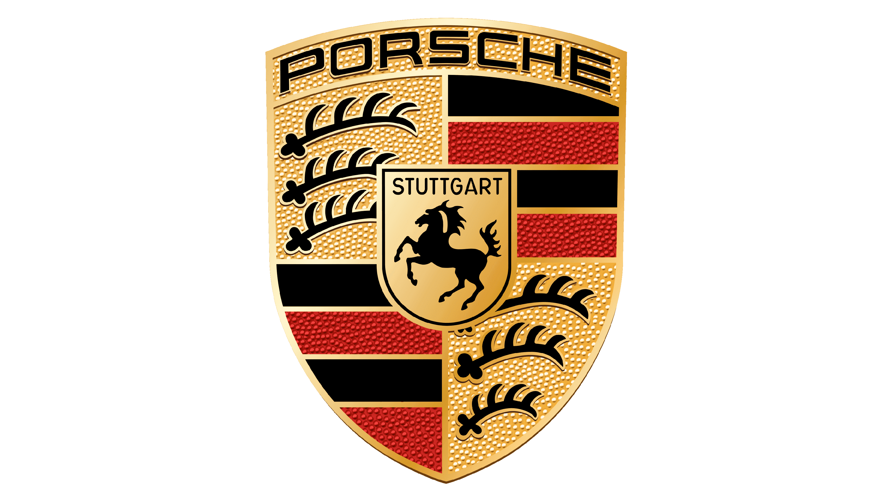

From the creation of distant idea in 1948 by Ferdinand Porsche, a German-Bohemian automotive engineer and founder of Porsche, and his modest team of 200, to the revolutionary release of the first Porsche 911 in 1963, this website is dedicated to showcasing the extraordinary evolution of the Porsche 911. A car that has captured the hearts of enthusiasts worldwide, it has established its place as a true icon of automotive excellence.
The journey of the Porsche 911 series is a testament to innovation, design, and engineering prowess. The original 911, crafted by F.A. Porsche, son of the founder, set a new benchmark for sports cars with its air-cooled flat-six engine, achieving 130PS (PferdStarke) a 0-100km/h acceleration in 9.1 seconds, and a top speed of 210km/h. These impressive specifications laid the foundation for a legacy that has continuously evolved while maintaining its core infastructure.
Over the decades, the Porsche 911 has seen the influence of legendary designers like Anatole Lapine and Harm Lagaay, contributing to its ever-evolving aesthetic and performance capabilities. The series has not only adapted to the changing times but has overall maintained its iconic status through a balance of tradition and innovation, ensuring that the 911 remains at the pinnacle of timeless automotive design.
Our website is a celebration of the Porsche 911's journey through time. Here, you will find detailed information on the various models that have been part of this storied lineage, from the classic elegance of the original 911 to the contemporary sophistication of its latest iterations. We aim to provide a comprehensive overview of how the Porsche 911 has remained a symbol of automotive perfection, evolving over 60 years without losing the essence of its original design.
Join us in exploring the rich history, the iconic designs, and the relentless pursuit of perfection that defines the Porsche 911 series. Whether you are a long-time aficionado or new to the world of Porsche, this website promises a captivating journey through the legacy of a car that has become much more than just a vehicle—it's a piece of automotive history.
